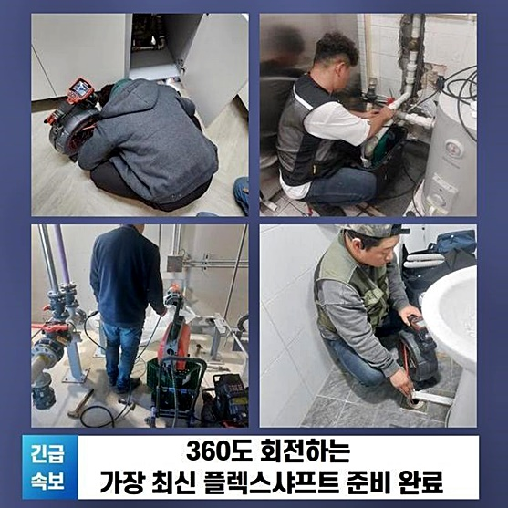
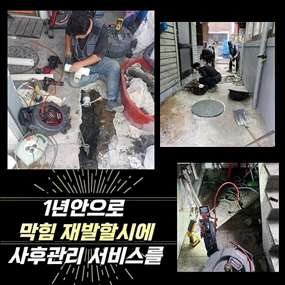
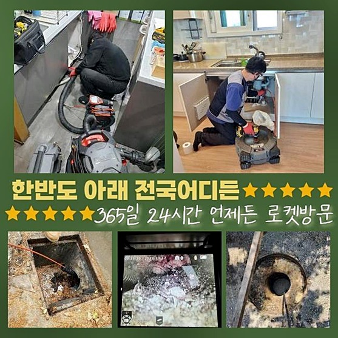
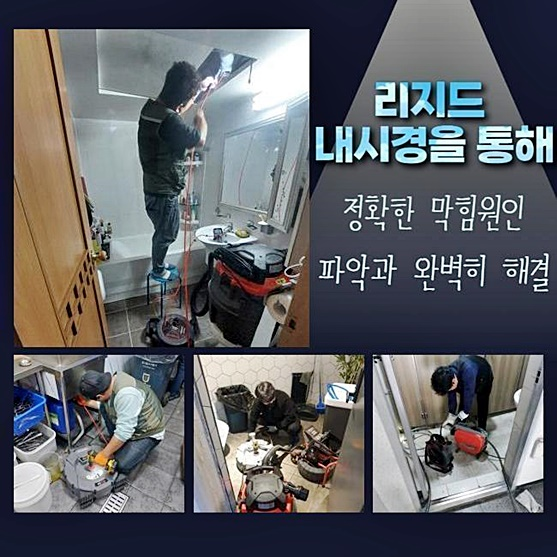
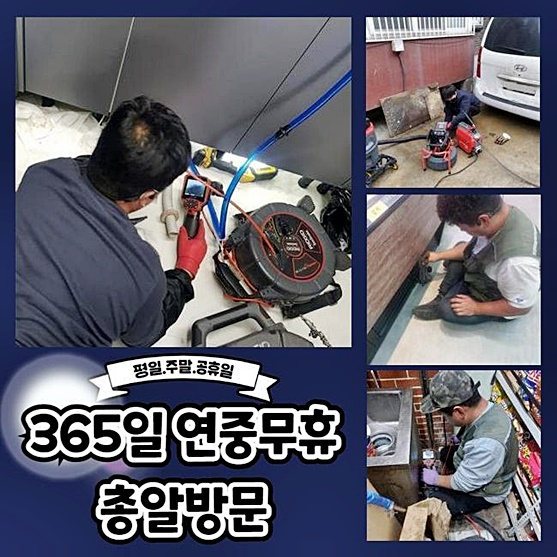
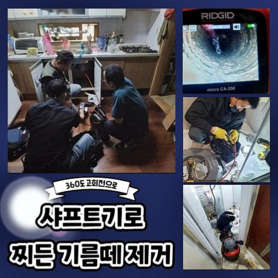

🏠 중구 광희동화장실하수구역류 회현동 오수맨홀청소 배관막힘누수업체
용인시 처인구 배관막힘 전문 시공 후기

📋 작업 개요
- 위치: 용인시 처인구, 수원시 영통구, 화성시 동탄
- 서비스 유형: 배관막힘, 누수수리, 내시경점검
- 작업 일시:
- 업체명: 하수구수사대 (010-5615-2118)
🔍 문제 상황
중구 광희동화장실하수구역류 회현동 오수맨홀청소 배관막힘누수업체
저희의경우 빨간날이더라도 고객님께서 막힘현상이 나타난곳이라면 어떤지역이든 내방해서 작업해드릴수있죠
의뢰자분의 편의성을 우선순위로 생각해서 빠른대응으로 해결해드릴 준비를마치고 있답니다
문제가없게끔 깔끔히 처리하고자 최선을다하고있죠
근래들어 내방한현장은 빠르게해결이 필요한 현장이었지만 고객의요청에 신속빠르게 대응해볼수 있었답니다
전문기기를 준비하여 방문했으므로 신속하고 효율적으로 해결할수있었어요
의뢰자분도 여러번이고 곤란함을 경험했다고 말씀해주셨지만 지금처럼 심하게막히고 역류문제도 나타났다고 말씀하셨기에 긴급한상태였죠
여러현장 경험을토대로 쌓인기술력을 바탕삼아 문제를확실히 해결할수가 있었네요
영업운영시 문제없게끔 만들어드렸죠

🔎 원인 분석
💡 전문가 진단: 정밀 진단 장비를 사용하여 슬러지의 고착 여부를 판명하고 타격/세척 작업을 실시했습니다.
1분1초가 시급한 상태에서도 일상생활시 영향이 가지않도록 확실하게 마무리하는것이 저희업체의 모토입니다
이후에 내방했던곳을 소개해드려 보겠습니다
먼저고객님과 인사를나눈후 내부로이동해 막힘이 일어난곳을 발견했어요
보일러실부근에 발생된 역류문제때문에 물이넘친 상황이었어요
상태가 심해지기전에 빠른수리가 필요했으므로 빠르게방문해 작업에착수했죠
결과를봤더니 조속한처리를 완료했고 배수상황이 원래의상태로 돌아왔답니다
신속한해결이 필요한곳에서는 신뢰할만한 전문기사를 선정하는게 안전하게 해결할수있는 해결책이에요
전문인호출시 전문도구들을 소유했는지에 대한여부와 작업경력을 갖추고있는지까지 확인해보시는게 좋아요
저희의경우 최신기기와 풍부한경험을 통하여 처리해드리고있죠
이번장소는 배수관안에서 발생이된 막힘문제였으며 시간이흐를수록 추가피해가 발생할수있었다 보니 빠른해결을 원하신다며 의뢰하셨죠

🔧 작업 과정
어떤상태인지 빠르게인지해 저희들을 불러주셨고 그나마 인지를하셔서 더큰손해를 보시기전에 처리가가능했죠
원인을살폈더니 배관입구쪽에 딱딱한오염물이 자리잡고있었기 때문이죠
덩어리이물은 계속쌓이며 점차딱딱해져 막히게된것이죠
샤프트장비를 활용해서 덩어리진 오염물질을 분해했습니다
샤프트기는 빠른속도로 돌아가며 하수구내벽에 쌓여진 오염물질을 깔끔히 분쇄시키는 역할로 담당하고있어요
분쇄시킨후 내시경장비로 하수도안쪽을 면밀히 검사했어요
하수구카메라 끝부분쪽에는 라이트가달려서 배관깊은부분도 파악할수있는 기계에요
많은양의 이물질과 모발이함께 섞이면서 뭉쳐진것을 확인했고 이를고객님에게 모니터화면으로 확인시켜드린뒤 상태가어떠한지 확인하실수 있으셨죠
생각과달리 많은양의 머리카락들과 잔해물질이 뭉쳐있었고 전부 제거해주는게 필요했습니다
머리칼은 배수관을 막기쉽기때문에 정기로 청소하지못하면 심각해질수있어요
제거를끝마치고 상태를보니 새배관으로 교체하거나 2차적인피해없이 처리해볼수있었어요
문제요지를 자세히파악해서 명백한 해결책으로 제시해야해요 잘못판단해서 과도한작업으로 연결되는것은 안되기때문입니다
서두에 설명드렸지만 하수구내시경을 통해서 면밀히 검사한후 잔해물을없애 하수관을 깨끗하게 유지해야합니다
이렇게되면 이물질이 쌓이는걸 예방할수있고 소량의 이물이라도 하수구안에 잔여되어있으면 막히는문제가 또 발현될수있으므로 섬세한작업이 필요하답니다
하수구는대개 잘관리하지않아 자주 막히게되고 막힘증세외에도 역류까지있으면 조속히 점검받아야해요
방치하게되시면 역류나누수가 발생해서 피해받으실수 있으므로 밤낮가리지않고 막힘이일어나면 연락주세요


✅ 작업 완료
저희는항시 고객님들의 편리함을위해 포기하지않고 뚫어내고자 최대한의 조치를취해드릴 준비가되있어요
1시간안으로 작업장소로 도착할수있고 투명한 수립계획을 공개하고있사오니 걱정마세요
배관에문제가 발현했다면 방임하시지말고 문의주시면 친절한상담을 약속할게요!
이밖으로도 궁금한부분이 있으시다면 연락하셔서 여쭈시면 세세히 안내드리겠습니다



⚠️ 하수구 배관 막힘 예방 및 관리 가이드
- ✅ 머리카락, 비닐, 물티슈 등 물에 분해되지 않는 이물질은 절대 흘려보내지 마세요.
- ✅ 기름기 많은 식기는 설거지 전 키친타올로 먼저 기름때를 닦아내세요.
- ✅ 주기적으로 배수구에 뜨거운 물을 가득 부어주어 유지방 고착을 방지하세요.
- ✅ 작업 후 1년 이내 재발 시 무상 A/S 보증 서비스를 제공합니다.
💡 핵심 정리
- 확실한 장비 작업(내시경 점검 및 샤프트 스케일링)으로 원인을 뿌리 뽑습니다.
- 작업 후 1년 이내에 동일한 부위 재발 시 100% 무상 A/S 서비스를 보장합니다.
- 서울 · 경기 · 인천 전 지역에 24시간 언제든 긴급 출동할 수 있도록 항시 대기 중입니다.
❓ 자주 묻는 질문 (FAQ)
🚨 용인시 처인구 배관막힘 문제로 고민이신가요?
정확한 원인 진단과 확실한 시공으로 재발 없는 해결을 약속드립니다.
24시간 긴급 출동 | 서울 · 경기 · 인천 전지역 | 1년 내 재발 시 무상 A/S